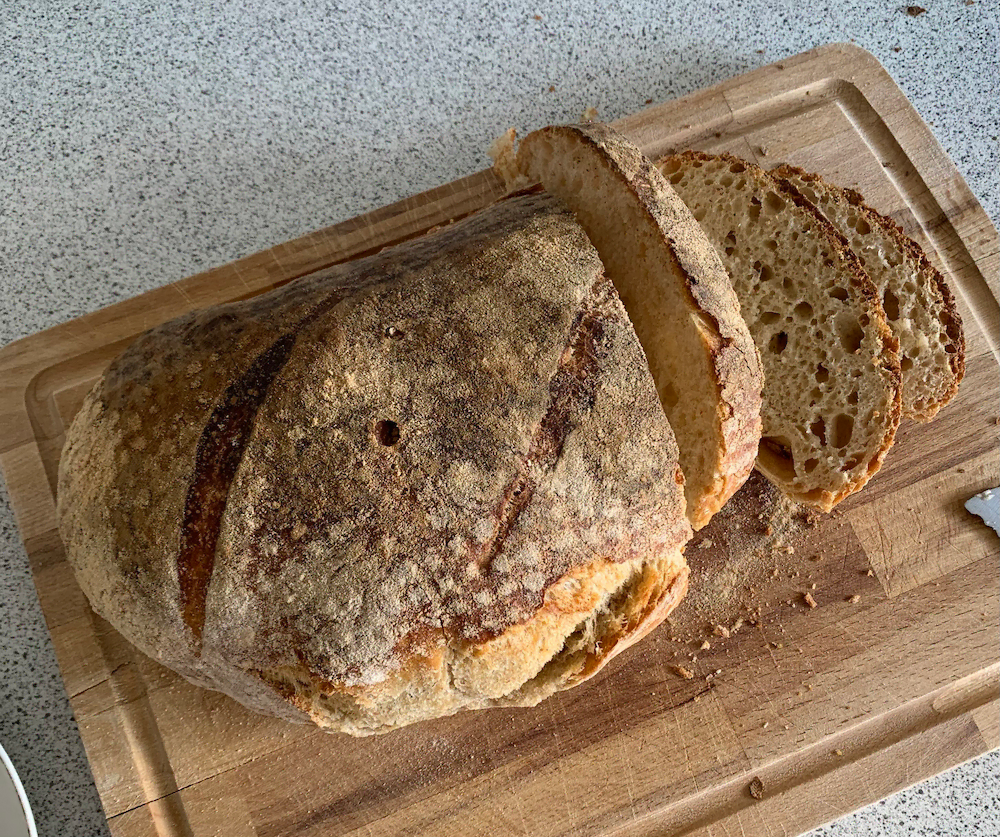

Da jeg for halvandet år siden fik et glas med starter fra min søster, stod den først i køleskabet i flere måneder for jeg var så bange for at gøre det forkert. Jeg synes at det var så overvældende med alle de forskellige “regler” der var, og jeg synes at fremgangsmåden var meget indviklet. Jeg manglede nogen som sagde at det for det første var okay at det ikke lignede de brød som man kan købe i de lækre æstetiske bagere, og to at det ikke var så svært som internettet fik det til at se ud. Man behøver ikke alle de fancy bageting, eller den mega dyre mel, for at bage et helt fint brød.
Så velkommen til surdejs amatør siden!